本次笔记主要讲述了如何在腾讯云控制台创建并使用你的第一个kubernetes集群，创建过程中每个步骤的区别以及如何选择，保证自己的集群资源达到最优。
使用TKE的优势
TKE集群类型
TKE CVM容器集群支持以下两种类型：
- 托管集群（Master、Etcd 腾讯云容器服务管理）
- 独立部署集群（Master、Etcd 采用用户自有主机搭建）
如果你需要对master的组件和ETCD有一定的订制，可以独立部署在CVM上，如果你仅仅只需要部署服务，则可以把master和Etcd托管
TKE容器集群业务优势
- 业务交付周期短：只需制作好业务镜像，容器基于业务镜像在秒级内启动，且可动态快速设置实例数量，相对物理机和CVM等业务交付和机器数量变更，极大的节省了交付周期。
- 业务半自动化：可通过TKE配置管理功能，快速变更pod下的容器批量配置，实现业务的自动化。（替代了ansible，saltstack部分功能）
- 业务自愈：只需设置好容器实例数，部署在上层的业务容器，即使容器异常退出，业务中止访问，在秒级内又会基于业务镜像启动新的容器实例，保证业务的可持续访问。
- 业务高可用：可通过设置容器实例数量大于或等于2，快速搭建高可用业务。
- 业务快速横向扩展：应对国庆，春节等高峰期访问量，可通过设置容器实例数量，实现业务的快速横向扩展。
- 业务透明管理：相对物理机和CVM，单个应用只会部署在单个容器中，相对在物理机和CVM上的混部方式，业务架构清晰，管理透明化。
- 业务资源成本低：容器器需要分配的 CPU 量 ( 单位：mU (千分之一核) )，最小100，既0.1核；容器需要分配内存的量 ( 单位：MiB )，建议最小为4MiB。若部署单个PHP业务应用，容器建议分配0.1核128M。相对物理机分配8核16G 和 CVM分配4核4G，极大的节省了成本，提高了资源利用率。
- 业务运维成本低：能够极大的降低运维成本，提升服务质量。（例如：相对在物理机和CVM上实现业务高可用，需要部署haproxy等软件，且搭建配置繁琐，在容器设置实例数即可，极大的降低运维成本。）
TKE容器对比与自建容器的优势
| 优势 | 腾讯云容器服务（TKE） | 自建容器服务 |
|---|---|---|
| 简单易用 | 简化集群管理腾讯云容器服务提供超大规模容器集群管理、资源调度、容器编排、代码构建，屏蔽了底层基础构架的差异，简化了分布式应用的管理和运维，您无需再操作集群管理软件或设计容错集群架构，因此也无需参与任何相关的管理或扩展工作。您只需启动容器集群，并指定想要运行的任务即可，腾讯云容器服务帮您完成所有的集群管理工作，让您可以集中精力开发 Docker 化的应用程序。 | 自建容器管理基础设施通常涉及安装、操作、扩展自己的集群管理软件、配置管理系统和监控解决方案，管理复杂。 |
| 灵活扩展 | 灵活集群托管，集成负载均衡您可以使用腾讯云容器服务灵活安排长期运行的应用程序和批量作业。您还可以使用 API 获得最新的集群状态信息，以便集成您自己的自定义计划程序和第三方计划程序。腾讯云容器服务与负载均衡集成，支持在多个容器之间分配流量。您只需指定容器配置和要使用的负载均衡器，容器服务管理程序将自动添加和删除。另外腾讯云容器服务可以自动恢复运行状况不佳的容器，保证容器数量满足您的需求，以便为应用程序提供支持。 | 需要根据业务流量情况和健康情况人工确定容器服务的部署，可用性和可扩展性差。 |
| 安全可靠 | 资源高度隔离，服务高可用腾讯云容器服务在您自己的云服务器中启动，不与其他客户共享计算资源。您的集群在私有网络中运行，因此您可以使用您自己的安全组和网络 ACL，这些功能为您提供了高隔离水平，并帮助您使用云服务器构建高度安全可靠的应用程序。容器服务采用分布式服务架构，保证服务的故障自动恢复、快速迁移；结合有状态服务后端的分布式存储，实现服务和数据的安全、高可用。 | 自建容器服务因其内核问题及 Namespace 不够完善，租户、设备、内核模块隔离性都比较差。 |
| 高效 | 镜像快速部署，业务持续集成腾讯云容器服务运行在您的私有网络中，高品质的 BGP 网络保证镜像极速上传下载，轻松支持海量容器秒级启动，极大程度降低了运行开销，使您的部署更加专注于业务运行。您可以在腾讯云容器服务上部署业务，开发人员在 GitHub 或其他代码平台提交代码后，容器服务可立即进行构建、测试、打包集成，将集成的代码部署到预发布环境和现网环境上。 | 自建容器服务的网络无保证，因此无法保证使用镜像创建容器的效率。 |
| 低成本 | 容器服务免费腾讯云容器服务没有任何附加费用，您可以在容器中免费调用 API 构建您的集群管理程序。您只需为您创建的用于存储和运行应用程序的云服务资源（例如云服务器、云硬盘等）付费。 | 需要投入资金构建、安装、运维、扩展自己的集群管理基础设施，成本开销大。 |
创建TKE CVM容器集群创建和使用
创建私有VPC网络
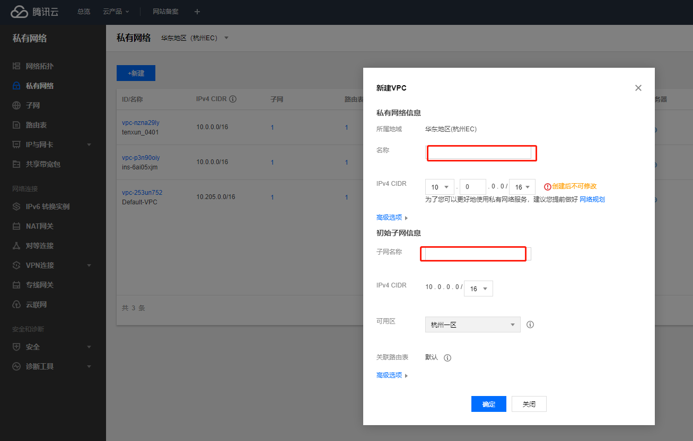
现在跳转到了私有网络创建界面，由于容器集群网络只支持私有网络，点击现在新建（容器集群网络只支持私有网络），输出私有网络名称（vpc-gz），和子网名称（subnet-vpc-gz），可用区我这里选择的是广州三区，点击创建。
至此，私有网络创建完成。
创建TKE集群
注意这里集群管理需要选择你新建的vpc的区域，因为创建集群需要用到vpc私有网络，如果该区域没有创建vpc网络，则无法创建集群
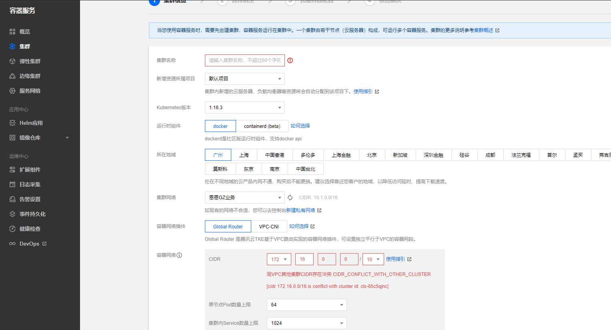
在容器服务中，点击集群，点击新建，跳转到创建集群的界面，填写集群信息。
集群名称：要创建的集群的名称。不超过60个字符。（我填写的集群名称是First-k8s）
- 新增资源所属项目：根据实际需求进行选择，新增的资源将会自动分配到该项目下。（和腾讯云服务器所在项目对应，因为没有创建，选择默认即可，之后创建容器集群是运行在CVM上，CVM也在默认项目下）
- Kubernetes版本：提供多个 Kubernetes 版本选择。各版本特性对比请查看 。（1.12.4版本才支持containerd组件，我这里选择containerd，如果你需要在节点上调用docker api接口或者执行docker命令，则需要选择docker）
- 所在地域：建议您根据所在地理位置选择靠近的地域。可降低访问延迟，提高下载速度。（我选择广州）
- 集群网络：为集群内主机分配在节点网络地址范围内的 IP 地址。（我选择刚刚创建的子网vpc-gz）
- 容器网络：为集群内容器分配在容器网络地址范围内的 IP 地址。（默认即可，详情可查看使用指引）
- 操作系统：Master和Node CVM机器所使用的操作系统。（这里我选择CentOS 7.6 64bit TKE-Optimized）
- 集群描述：填写集群的相关信息，该信息将显示在集群信息页面。
- 高级设置：可设置 ipvs。ipvs 适用于将在集群中运行大规模服务的场景，开启后不能关闭。（我这里选择开始）
单击【下一步】。
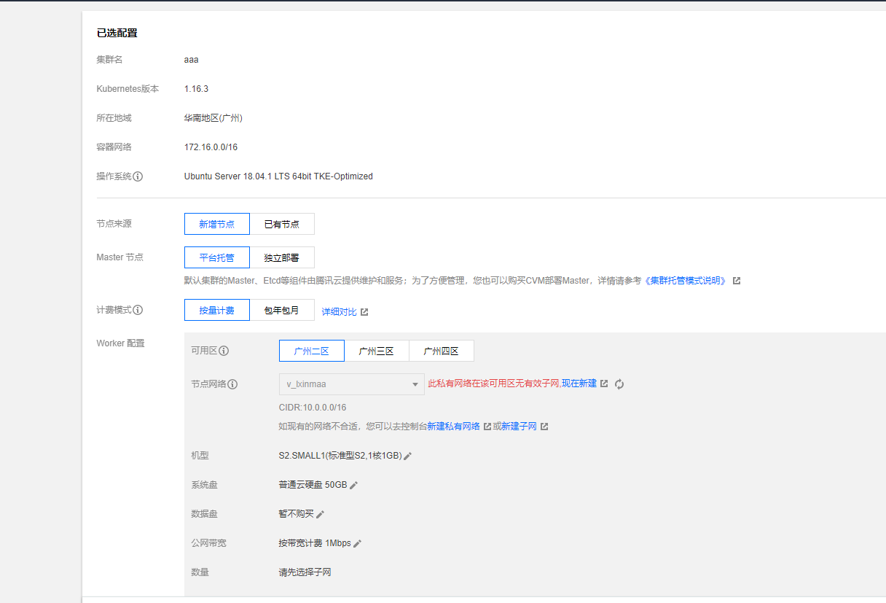
主要参数信息如下：
- 创建集群：因为初次创建，默认项目下没有云主机，所以不用勾选。（如果你之前已经购买了CVM，可以选择购买的CVM）
- Master：Master 的部署方法决定了您集群的管理模式，我们提供了两种集群托管模式选择。（这里可以根据个人需求来选择类型，如果是选择托管模式，则可以节省master节点的部署费用，但是无法对master组件进行配置修改。相反，独立部署有master节点CVM等配置的支出，但是可以自己修改master组件配置。我们这里选择托管）
- Node：Node 配置的是集群运行服务真正使用的工作节点。您可以在创建集群时购置云服务器作为 Node 节点，也可以在集群创建完成后再添加 Node 节点。（我这里选择新增，在创建TKE集群时，node节点同时创建好）
计费方式：选择按量计费（按照你的使用时长收费） - Node机型：当 “Node” 选择为 “新增” 时，可选。
- 可用区：选择广州三区，因为我的私有子网络创建在广州三区。
- 节点网络：选择刚刚创建的私有网络即可
- 机型：我这里选择的是标准型S1 4核4G
- 系统盘：默认为“本地硬盘50G”，您可以根据机型选择本地硬盘、云硬盘、SSD 云硬盘、高性能云硬盘等。
- 数据盘：（我这里选择保持默认，暂不购买）
- 公网带宽：勾选分配免费公网IP，系统将免费分配公网 IP。（我这里保持默认）
- 数量：Node节点设置>=1台。（我这里选择保持默认，1台）
主要参数信息如下：
- 数据盘挂载：不用勾选。（之前我没有选择购买数据盘）
- 安全组：安全组具有防火墙的功能，用于设置云服务器的网络访问控制。（这里我点击新建安全组，选择容器节点放通30000-32768端口）
- 登录方式：提供三种登录方式。
- 设置密码：请根据提示设置对应密码。（我们选择该方式）
- 立即关联密钥：密钥对是通过算法生成的一对参数，是一种比常规密码更安全的登录云服务器的方式。
- 自动生成密码：自动生成的密码将通过站内信发送给您。
- 安全加固：默认勾选
- 云监控：默认勾选
- 节点启动配置：可设置容器的开机启动脚本，我这里没有填写。
- Lable：可以给你的节点打上对应的标签，可以用于后续pod的调度使用
- 封锁：开启封锁后，容器不会调度创建到该node节点上，这里不勾选。
单击【下一步】，检查并确认配置信息。
单击【完成】，即可完成创建。
完成后可以在集群管理页面找到你创建的集群查看集群创建的进度
至此，集群已经创建完成
TKE容器集群的创建
如何访问k8s集群
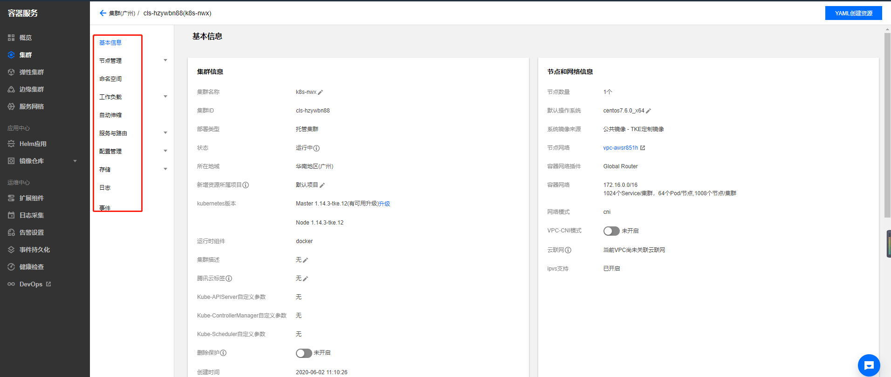
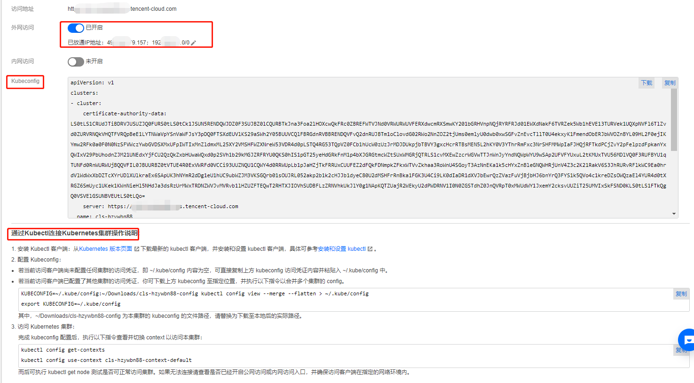
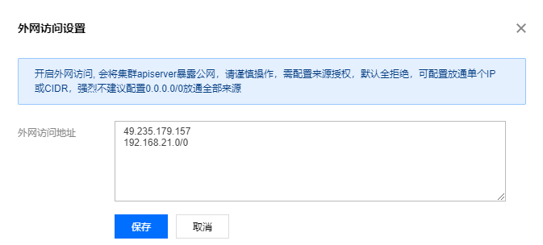
我们通过kubectl的方式访问创建的集群主要分为以下步骤
- 开启集群的访问权限：如果你是在同一个vpc下访问集群，则开启内网访问即可，如果你是需要在公网上访问，则需要开机外网访问的权限，注意这里在开启访问权限时候尽量指定ip或者ip网段访问，这样保证集群的安全。
- 获取kubeconfig配置：可以复制或者下载kubeconfig文件到本地，方便后续使用。
- 客户端机器上安装kubectl：如果是已经安装了集群机器，则不需要安装kubectl，新的集群则采用下面命令安装
1
2
3 - 配置集群的kubeconfig文件：配置kubeconfig文件分为2种情况，已经配置其他集群的访问凭证，还有就是没有配置过
已经配置过其他集群执行下面操作
1 | # cd /root/.kube/ |
未配置过集群的执行如下操作
1 |
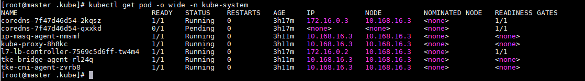
可以查看自带的pod查看集群信息
创建工作负载
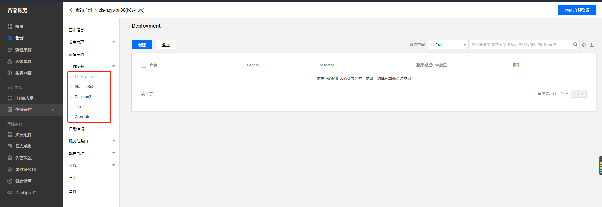
集群中提供了以下五种负载
- deployment：Deployment 声明了 Pod 的模板和控制 Pod 的运行策略，适用于部署无状态的应用程序。您可以根据业务需求，对 Deployment 中运行的 Pod 的副本数、调度策略、更新策略等进行声明。
- statefulset：StatefulSet 主要用于管理有状态的应用，创建的 Pod 拥有根据规范创建的持久型标识符。Pod 迁移或销毁重启后，标识符仍会保留。在需要持久化存储时，您可以通过标识符对存储卷进行一一对应。如果应用程序不需要持久的标识符，建议您使用 Deployment 部署应用程序。
- daemonset：通过daemon进程的方式在每个节点上部署一个pod，一般用于日志和告警指标的收集场景。
- job：Job 控制器会创建 1 - N 个 Pod，这些 Pod 按照运行规则运行，直至运行结束。Job 可用于批量计算及数据分析等场景，通过重复执行次数、并行度、重启策略等设置满足业务述求。Job 执行完成后，不再创建新的 Pod，也不会删除已有 Pod，您可在“日志”中查看已完成的 Pod 的日志。如果您删除了 Job，Job 创建的 Pod 也会同时被删除，将查看不到该 Job 创建的 Pod 的日志。
- cronjob：一个 CronJob 对象类似于 crontab（cron table）文件中的一行。它根据指定的预定计划周期性地运行一个 Job，格式可以参考 Cron。
一般我们部署pod的之前都要先创建你所部署的命名空间和从镜像仓库拉取镜像的秘钥。
创建namespace
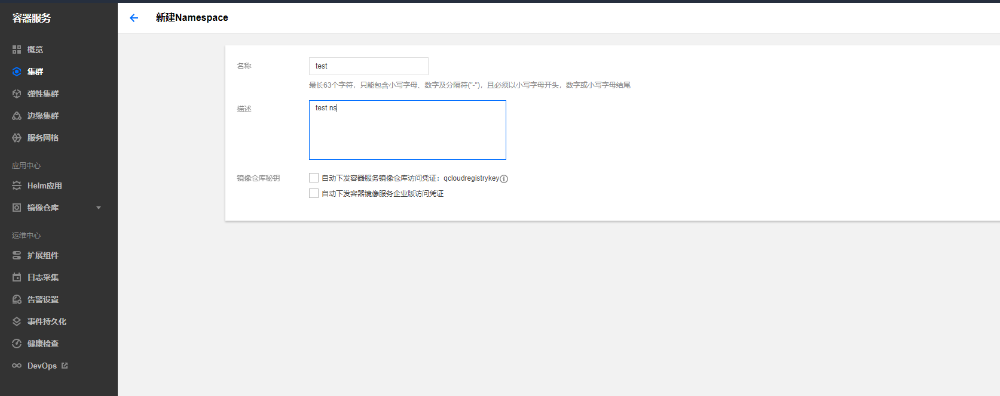
创建镜像拉取secret
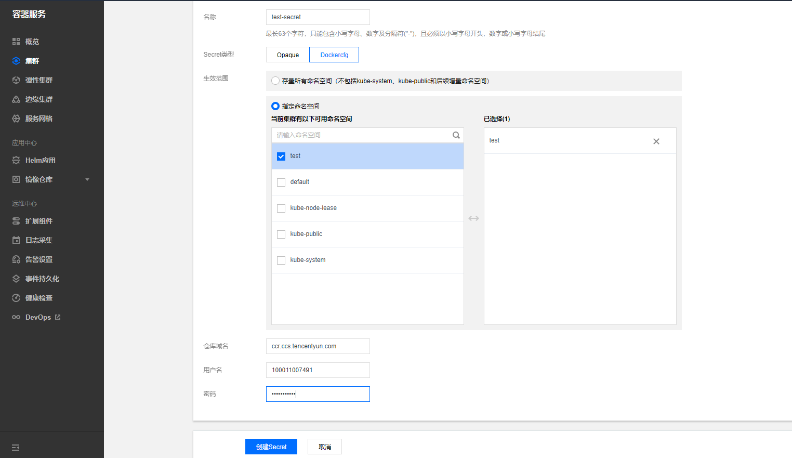
配置deployment
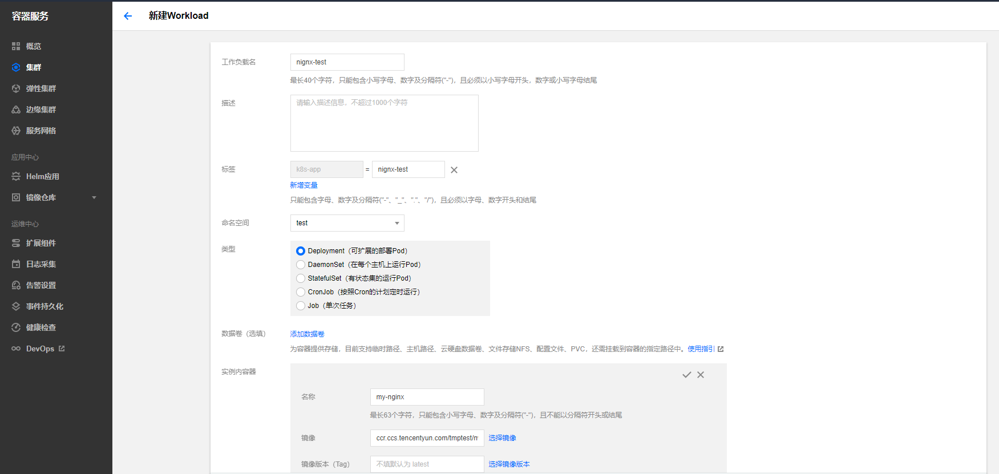
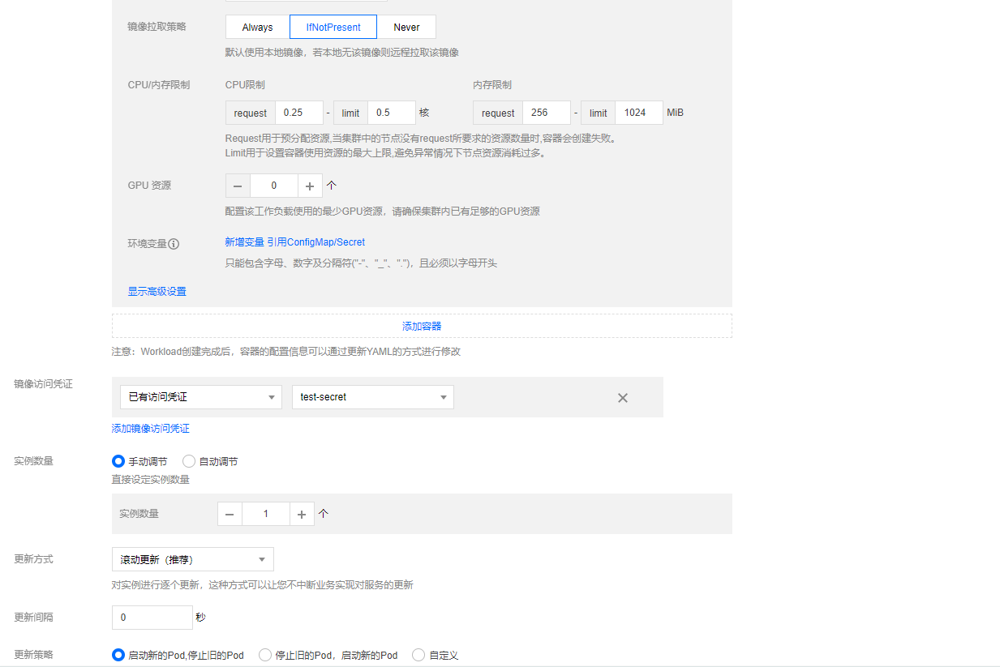
根据实际需求，设置 Deployment 参数。关键参数信息如下：
- 工作负载名：自定义。（我填写是nginx-test名称）
- 命名空间：根据实际需求进行选择。这里选择之前创建的test。
- 类型：选择 “Deployment（可扩展的部署 Pod）”。
- 数据卷：不用添加。因为选择的是方案一，对网站源码存储方式无特殊要求。
- 实例内容器：根据实际需求，为 Deployment 的一个 Pod 设置一个或多个不同的容器,我们选择一个nginx
- 名称：自定义。（我填写my-nginx）
- 镜像：根据实际需求进行选择。（我这里选择nwx-nginx仓库）
- 镜像版本：根据实际需求进行填写。（我这里没写，默认为最新）
- 镜像拉取策略：本地没有则去远程拉取
- CPU/内存限制：可根据 Kubernetes 资源限制 进行设置 CPU 和内存的限制范围，提高业务的健壮性。（默认的参数即可）
- 高级设置：可设置 “工作目录”，“运行命令”，“运行参数”，“容器健康检查”，“特权级”等参数。（高级功能这里先不设置）
- 添加容器：我们就运行一个容器
- 实例数量：根据实际需求选择调节方式，设置实例数量。
- imagepullsecrets：镜像的拉取秘钥，选择我们之前创建的test-secret
- 节点调度策略：节点的亲和性调度功能，默认即可。
创建service
配置service
Service 定义访问后端 Pod 的访问策略，提供固定的虚拟访问 IP。您可以通过 Service 负载均衡地访问到后端的 Pod。 Service 支持以下类型：
- 公网访问： 使用 Service 的 Loadbalance 模式，自动创建公网 CLB。 公网 IP 可直接访问到后端的 Pod。
- VPC内网访问：使用 Service 的 Loadbalance 模式，自动创建内网 CLB。指定 annotations:service.kubernetes.io/qcloud-loadbalancer-internal-subnetid: subnet-xxxxxxxx，VPC 内网即可通过内网 IP 直接访问到后端的 Pod。
- 集群内访问：使用 Service 的 ClusterIP 模式，自动分配 Service 网段中的 IP，用于集群内访问。
- 主机端口访问：通过node节点IP+端口访问业务。
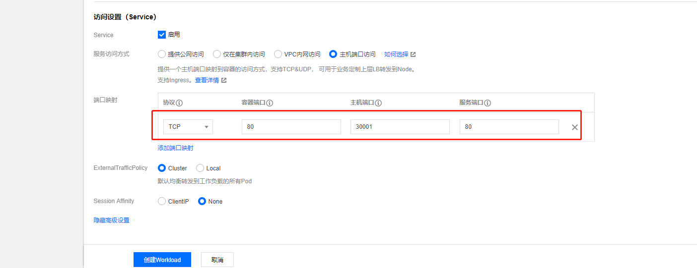
根据实际需求，设置 Service 参数。关键参数信息如下：
- Service：勾选启用。
- 服务访问方式：根据实际需求，选择对应的访问方式。因为我要从本地windows机器访问wordpress服务，所以我这里选择主机端口访问，我们可以通过节点CVM的共有ip访问。
- 端口映射：根据实际需求进行设置。协议选择TCP，容器端口是指容器内服务运行的端口（我这里填写的80，也就是nginx服务启动端口）,主机端口为30001，服务端口为80
- ExternalTrafficPolicy：保持默认。
- Session Affinity：保持默认。
点击创建
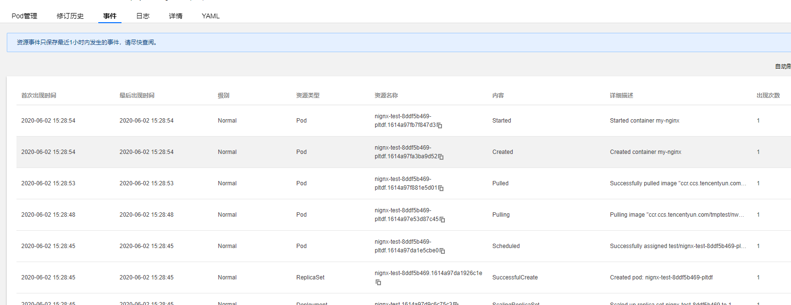
此时会自动跳转到事件页面，可以看到的pod日志没有报错。
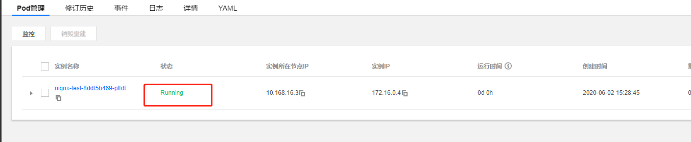
pod状态都为running则表示pod启动正常
访问好创建的服务
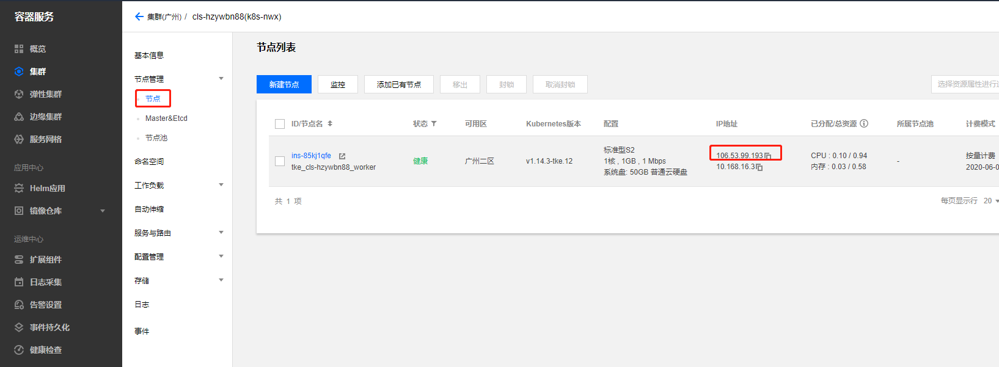
从节点管理获取到节点的ip
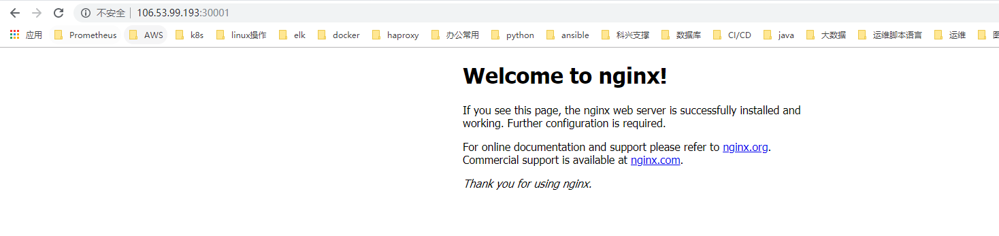
通过节点ip:30001的访问即可访问到对应的服务
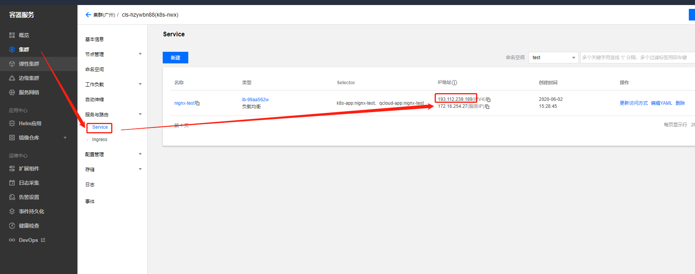
可以查看service中的公网ip
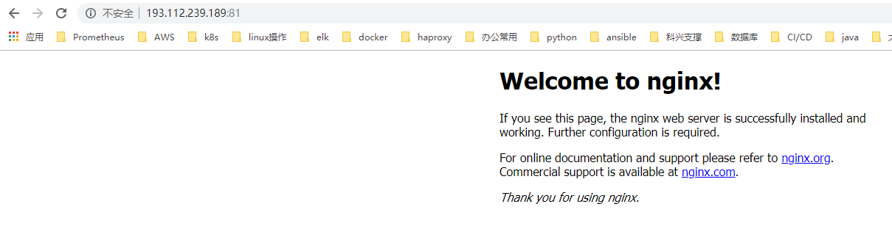
通过公网ip和映射的端口进行访问（我们设置的映射端口为81）
配置ingress
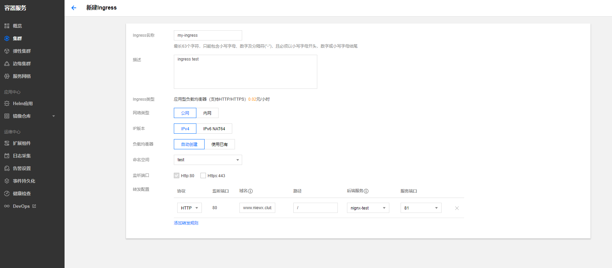
创建ingress来设置域名来访问对应的集群服务
参数设置如下
- 命名空间：选你所需要转发的服务所在命名空间
- 监听端口：http监听为80，https监听为443，https需要配置ssl证书
- 转发配置：配置你的域名，如果后端多个路径对应不同域名则配置配置路径，没有就配置/，选择服务名称和端口
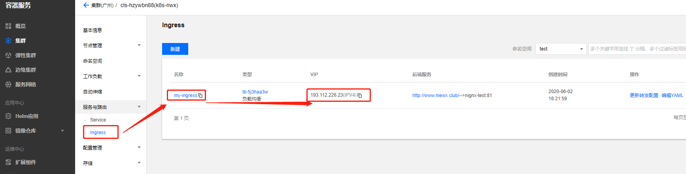
域名解析，我们只需要在自己购买的域名里面将对应的子域名解析到vip的ip即可
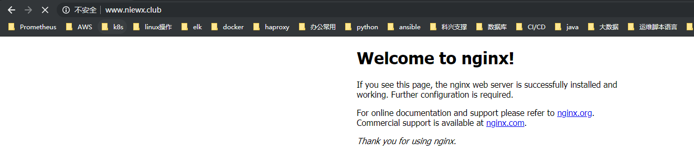
在浏览器输入域名即可访问到对应的服务
新加节点到集群中
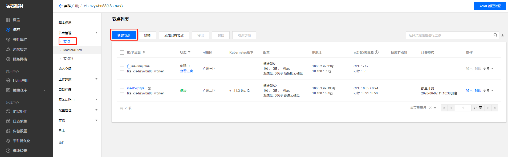
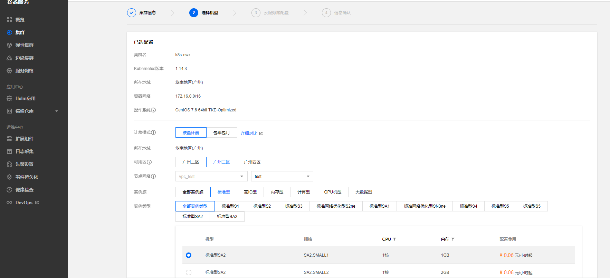
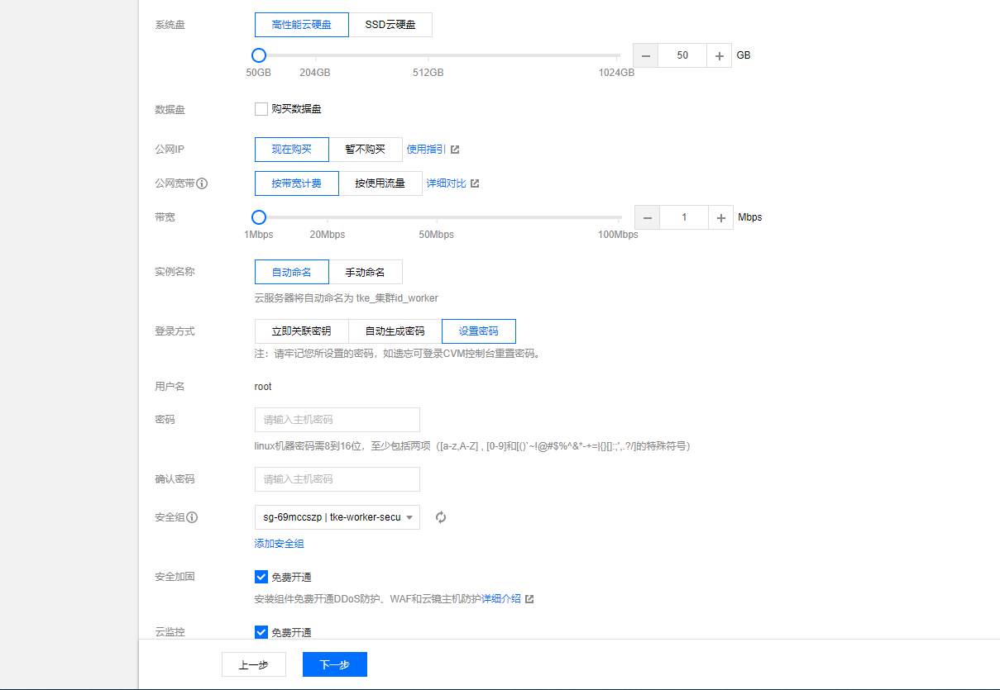
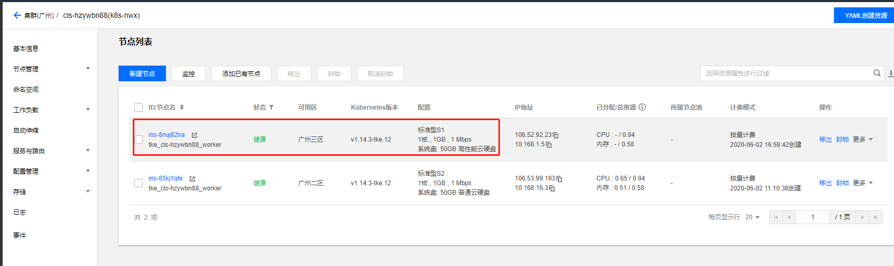
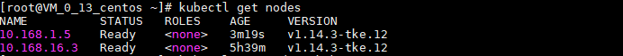
TKE容器配置项操作
配置项介绍和作用
配置用来规定一些程序在启动时读入设定，提供了一种修改程序设置的手段， 针对不同的对象可以使用不同的配置。
配置项是多个配置的集合，配置项的值可以是字符串，也可以是文件
- 使用配置项功能可以帮您管理不同环境、不同业务的配置，支持多版本,支持Yaml格式
- 方便您部署相同应用的不同环境，配置文件支持多版本，方便您进行更新和回滚应用
- 方便您快速将您的配置以文件的形式导入到容器中
创建配置项
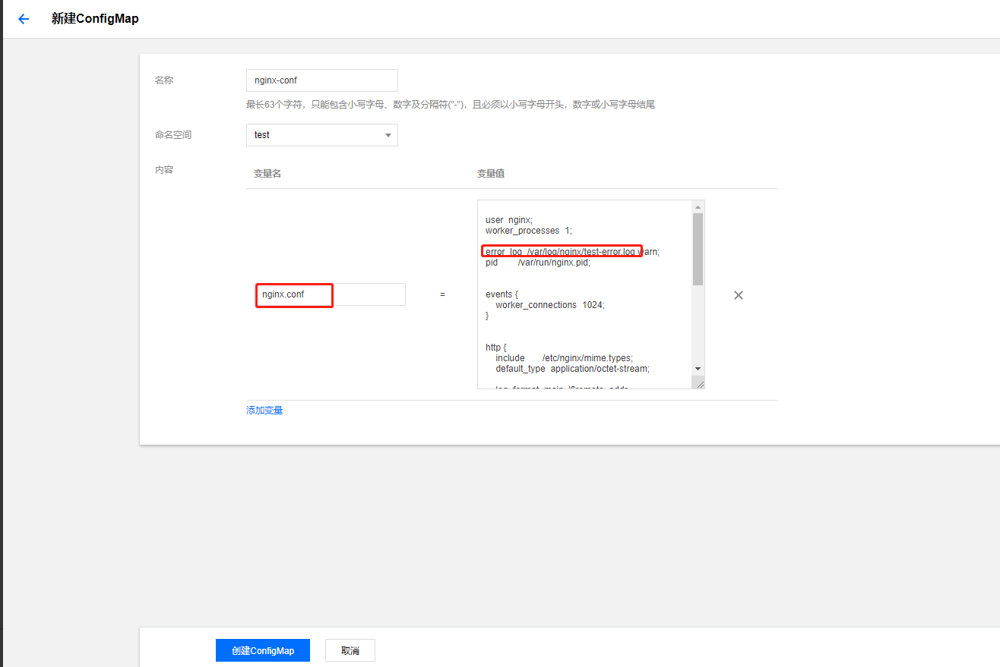
我们这里新建一个配置项，只修改nginx的错误日志名称作为示例
配置说明：
- 名称：configmap的名称
- 命名空间：挂在服务所在的命名空间
- 内容：你挂在的文件及文件内容
挂载configmap
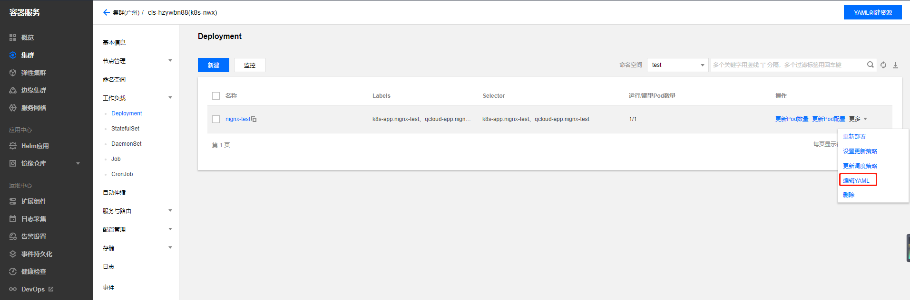
1 | 修改yaml文件如下 |
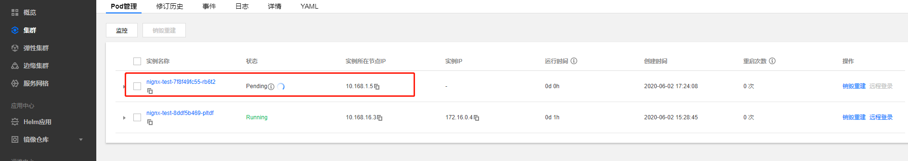
提交修改后会自动滚动更新pod
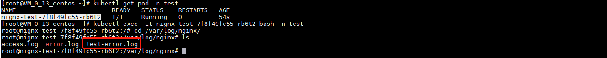
可以进入容器中看看日志名称是否修改，如果发现日志名称修改，则挂载成功
新建容器通过configmap挂载环境变量
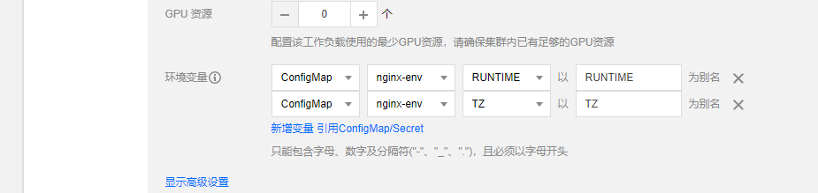
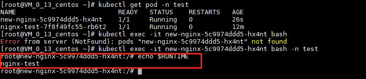

欢迎访问 Vashon 的博客，博客和文章在完善中，请大家耐心等待。 若有问题或者有好的建议欢迎留言，笔者看到之后会及时回复。